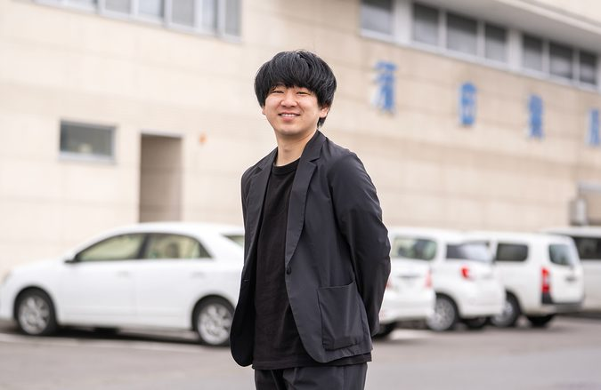
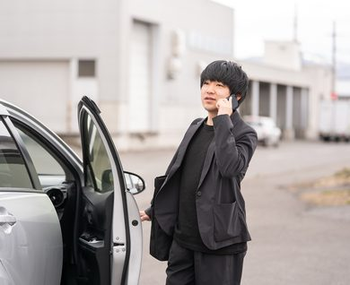
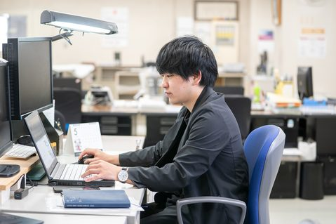
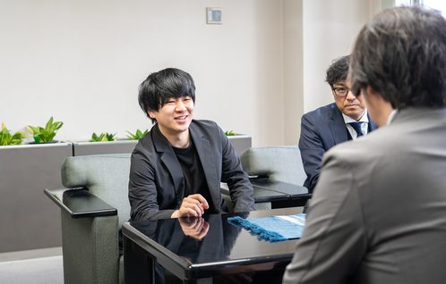

2026年 取材当時
旭川支社 営業部
S.I20代
2021年入社
旭川市立大学（旧：旭川大学）
経済学部 経営経済学科
私の仕事内容
誰もが想像する印刷会社の営業内容は、クライアントからのヒアリングをもとにベストな印刷物などを提案し、紙やインクなどの資材を手配、スケジュールや業務全体を管理する仕事だと思います。これらは、もちろん営業活動の主軸ですが、時には業界の概念に捉われないクリエイティブな発想も必要とされます。クライアントの想いを汲み取り、印刷物やそれ以外のアイデアや企画の提案、ディレクションにも取り組みながらカタチにするのが営業職の醍醐味、そして現場だからこそ感じられる達成感がワクワクするポイントだと思います。

1日のスケジュール
１日の流れをイメージしながら、コーヒーと共に急ぐ事務作業等から進めます。
旭川市内、時には市外にも出向いてクライアントをヒアリングします。
最近は外食が多く、とにかくカレーを食べています。とにかくカレーが好きなんです。
動画などの撮影を担当する機会あるので、現地ロケハンや必要機材の整理をします。
営業活動でヒアリングした内容を制作部に伝え、デザインや業務の方向性を共有します。
ブラスバンドの練習に向け、基本的には定時に帰ります。
入社してから成長を感じた出来事
業務を通じて達成感を得る機会が多くあります。約1年を投じた動画制作やイベント企画では、人員配置やコスト管理、社内外との調整など、一筋縄ではいかない場面も多々ありました。しかし、多くの方々の協力を得て完遂したことで、大きな達成感とともに確かなスキルと知見を得ることができました。また、撮影現場などの実務においても、ディレクションや立ち回りの幅が広がる中で「できることが増えていく」という明確な手応えを感じており、それが日々の大きなモチベーションに繋がっています。

入社前のイメージと入社後で違ったこと
まちの印刷屋さんではなく、クライアントの想いをカタチにする“クリエイター”と感じました。入社当時は「印刷屋さんのお仕事をトコトン！」だと思っていましたが、業界やクライアントのニーズが変わるに連れて、求められる製品やアイデアも変わってきています。特にわかりやすく感じたのがコロナ禍でした。入社後は印刷だけに捉われずにクライアントの本質を理解し、動画制作やイベント企画などを提案をする機会も増えました。時には撮影の為に登山も…。新しいことに挑戦させてくれる環境が私には合っていたのかもしれません。

プライベートの話
どちらかと言えば多趣味かと思います。春にはサイクリングやサウナ、夏には登山やマラソン、秋にはカメラを持って旅行、冬にはバックカントリーなど…周りの友人からもマグロと呼ばれます。。。その中でも、最も期間が長く注力しているのは“トランペット”です。小学３年生で始めたトランペットを今もなお吹き続け、現在では旭川市で活動するブリティッシュブラスバンドでプリンシパルとして所属しています。毎日何かに追われるように動いていますが、その反面で抜群の充実感を感じています。